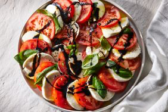

Home
Caprese Salad

Beskrivelse
Dette er en deilig italiensk salat med mozarella, tomater og
balsamico-reduksjon. Ikke spar penger på tomatene her. De må
være saftige og røde.
Ingredienser
- Tomater i skiver
- Mozarella i skiver
- Balsamico
- Basilikum
Fremgangsmåte
- Anrett tomater og mozarella og basilikum på et fat
- Kok balsamico i noen minutter, til den tykner
- Drypp reduksjonen over salataen